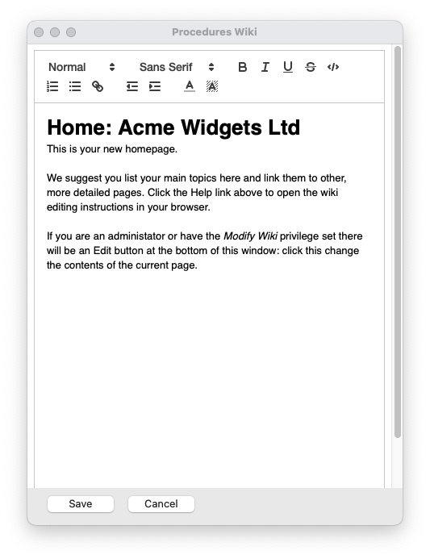
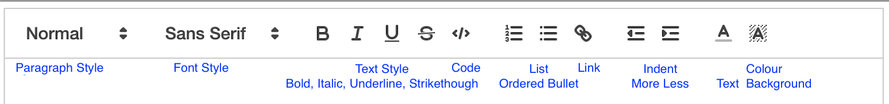
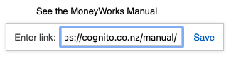
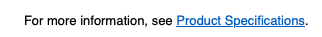
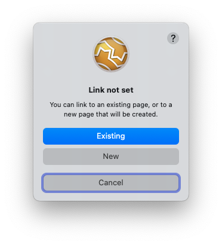
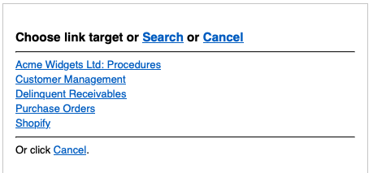

MoneyWorks Manual
Editing a Wiki Page
Users who have Editing access to a page can change the page's contents.
To change the contents of current page:
- Click the Edit button at the bottom of the wiki window
The window will change to editing mode. The navigation toolbar at the top of the window will be replaced by a toolbar containing formatting tools, and you will be able to click into the wiki to insert/highlight text, in a similar manner to a word processor.

- Change the text, and use the formatting tools in the toolbar to present it in the desired layout
- Click Save to save the changes, and revert to viewing the page
Clicking Cancel will offer to discard the page.
Important: The first heading (or paragraph, if there is no heading) becomes the page name, and will be displayed when searching and linking the wiki. For this reason it should be descriptive of the page, and not too long.
The tools in the toolbar are mostly standard:

You can also paste (or drag) images into the wiki page while editing. Images tend to take a lot of space, and for this reason you should be selective of what images you want. To reduce storage, images will also be downsized (i.e. will lose resolution), and will be physically shrunk to fit. Do not store important drawings, photos or other images in the wiki.
Linking to external website
The link tool is used for creating links to external websites, not links within the wiki itself. When viewing the wiki, clicking on one of these links will open the destination in your browser.
To make an external link:
- Highlight the text from which to link (the "link text")
- Click the Link tool
A dropdown entry window will appear beneath your highlighted text
- Enter the URL to link to. The example below links to the MoneyWorks online manual

- Click the blue Save button
The highlighted text will appear in blue and underlined, indicating a link.
Click on the blue linked text to check, edit or remove the link.
Linking to other wiki pages
To make a link to another wiki page, simply enclose the link text in curly brackets. For example:
For more information, see {Product Specifications}.
will create a link when the page is saved:

Clicking on the link the first time will prompt you to select a destination for the new link (see below).
Note: When editing a page with existing internal links, the links will have a link-id prepended to it. For example, the sample text above will show as something like:
For more information, see {Z1000:Product Specifications}.
In this case Z1000 is the link-id, and the text after the colon is the link text. You can change the latter, but you should not meddle with the link-id, as that would break the link.
Note: The link text for an internal link cannot contain a colon: if it does the link will not be created and will appear in curly brackets when viewing the page.

Clicking on an internal link the first time will display the following, provided you have edit privileges:
To link to a new page, click New : A new page will be created, with the link text being the heading. It will be in Edit mode, allowing you to add text. Having saved the new page, click the Back link in the navigator to return to the previous page.
To link to an existing page, click Existing : A list of accessible pages will be shown:

Click on the desired target link to select that, Search to open the Search Window (see below), or Cancel (in which case the link will not be set).
If you find you linked to the wrong internal link, hold down the option key (Mac) or the alt key (Windows) and click on the link again. It will offer to reset the link for you.